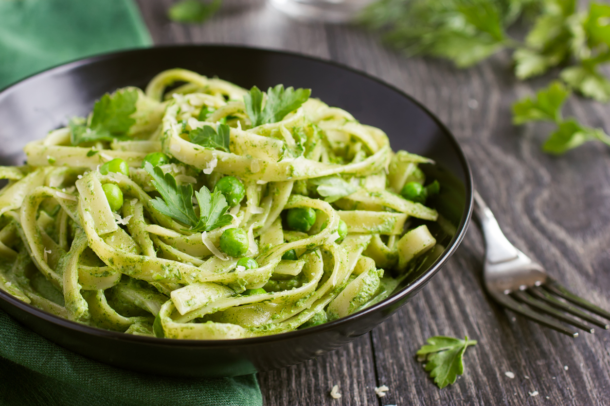

¿Qué es el Pesto?
El pesto es una salsa italiana originaria de Génova, hecha a base de albahaca fresca, piñones, ajo, queso parmesano y aceite de oliva. Es una opción deliciosa para acompañar pasta.
Una receta fácil, deliciosa y llena de sabor.
Volver a inicioEl pesto es una salsa italiana originaria de Génova, hecha a base de albahaca fresca, piñones, ajo, queso parmesano y aceite de oliva. Es una opción deliciosa para acompañar pasta.